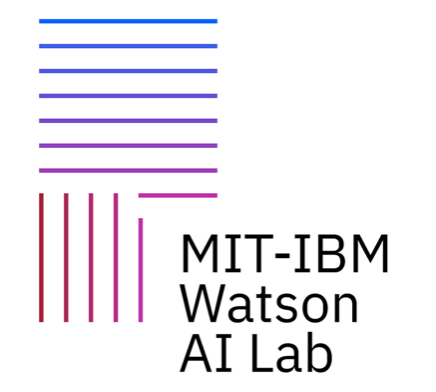
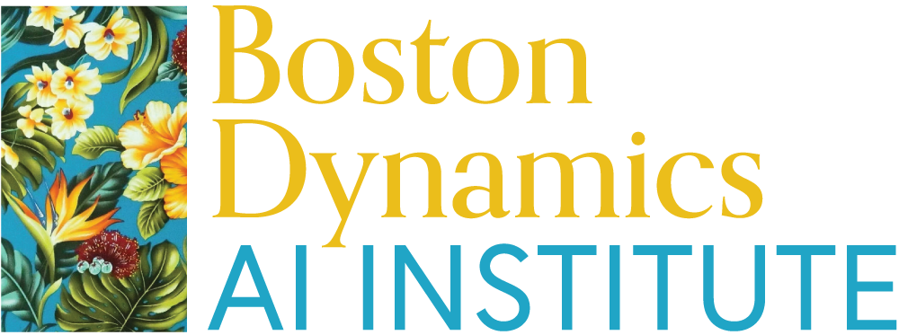
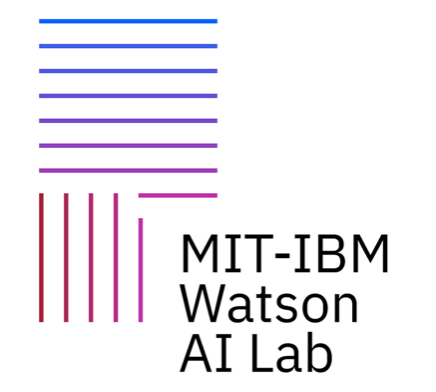

Sponsorship
We are grateful to the MIT-IBM Watson AI Lab for providing the venue and logistical support. We thank Boston Dynamics, Shipin.ai, Google for providing funding.

The New England Computer Vision Workshop (NECV) brings together researchers in computer vision and related areas for an informal exchange of ideas through a full day of presentations and posters. NECV typically attracts around 100 people from universities and industry research labs in New England. As in previous years, the workshop will focus on graduate student presentations.
Welcome!
- Phillip Isola and Pulkit Agrawal
Participation is free for all researchers at academic institutions. Academic researchers should register here.
For our industry friends, a limited number of registrations are available for a fee. Please contact Samson Timoner - samson@ai.mit.edu for details.
Please submit a one-page PDF abstract using the CVPR 2023 rebuttal template by email to necv2022mit@gmail.com. Abstracts are due by 11:59pm on Mon Nov 21st, 2022. Oral decisions will be released by Nov 28th..
You may present work that has already been published, or work that is in progress. All submissions will be granted a poster presentation, and selected submissions from each institution will be granted 12-minute oral presentations. Post-docs and faculty may submit for poster presentations, but oral presentations are reserved for graduate students.
There will be no publications resulting from the workshop, so presentations will not be considered "prior peer-reviewed work" according to any definition we are aware of. Thus, work presented at NECV can be subsequently submitted to other venues without citation.
The workshop is after the CVPR supplemental deadline, so come and show off your new work in a friendly environment.
| 9:30-10:00 | Coffee, snacks, poster setup | |
| 10:00-10:15 | Welcome | |
| 10:15-11:30 | Oral presentations 1 |
|
| 11:30-11:45 | Sponsor talks | |
| 11:45-13:00 | Lunch (on your own) | |
| 13:00-14:30 | Poster presentations |
|
| 14:30-15:45 | Oral presentations 2 |
|
| 15:45-16:00 | Coffee | |
| 16:00-17:15 | Oral presentations 3 |
|
The workshop will be held at the MIT-IBM Watson AI Lab (314 Main Street, Cambridge, MA, 02142).
You will need a photo ID to get in the building (a driver's license or any other photo ID is fine).
Getting there: The building is right above the Kendall T stop. There are also several (expensive) parking garages nearby, one of the closest is 33 Amherst St, Cambridge MA 02142, which costs $45 per day. Street parking is not easy to get in the Kendall area.
We are grateful to the MIT-IBM Watson AI Lab for providing the venue and logistical support. We thank Boston Dynamics, Shipin.ai, Google for providing funding.
Thank you to Samson Timoner and Luke Inglis for helping us arrange NECV 2022. Thank you also to the steering committee: James Tompkin, Benjamin Kimia, Todd Zickler, Yun Raymond Fu, Octavia Camps, Kate Saenko, Erik Learned-Miller, and Subhransu Maji.